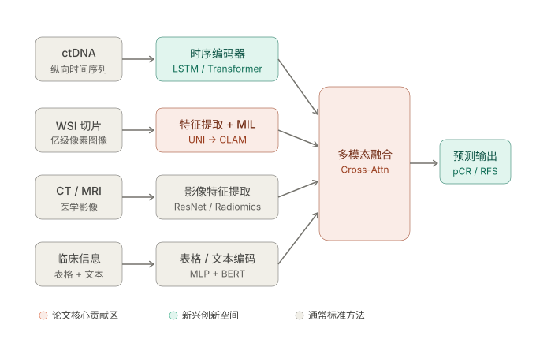
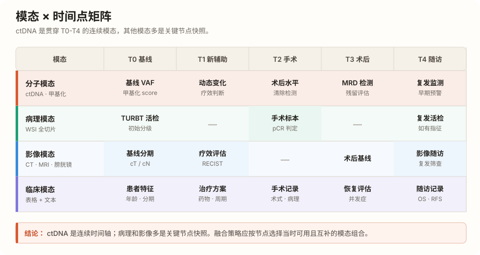

Stage 1： 项目本身
一、项目的背景与动机
MIBC（muscle-invasive bladder cancer，肌层浸润性膀胱癌）是已经侵犯膀胱肌层的膀胱癌，侵袭性强、复发风险高、患者差异大。 目前常见治疗路径是 (下图中的第一行)

1. 本项目要解决的临床问题
（一）、T1/T2：新辅助治疗疗效预测
痛点在于：新辅助治疗后患者反应差异很大，医生很难在早期判断谁真正获益、谁可能耐药。
预测的指标: pCR / 病理缓解程度，即新辅助治疗响应，pCR、MPR、降期来评价。
（二）、T3/T4：术后 MRD 与复发风险预测
痛点在于：术后是否仍存在 MRD（微小残留病灶）难以判断，传统复发风险监测依赖影像和随访，往往滞后，而单独看 ctDNA、单独看病理、或单独看临床信息都不够。
对应需要预测的指标是 MRD / 复发风险，以及长期生存预后（OS / PFS），长期问题，回答的是“手术后未来癌症会不会回来”，常用 RFS、DFS、OS、MRD 状态来评价。
2. 项目的核心切入点：多源融合
将 ctDNA 作为体内肿瘤状态的"分子雷达"，AI 病理作为肿瘤组织空间结构的"显微镜"，临床信息作为治疗上下文，三者融合后同时服务于疗效预测和复发风险判断这两大临床目标。**选用 *ctDNA 甲基化而非常规突变检测*，是因为常规 ctDNA 动态监测成本高、长期随访负担大，而甲基化检测相对便宜，更适合优化检测频率和策略。**
二、基本知识
2.1 ctDNA是什么？
ctDNA，circulating tumor DNA，即循环肿瘤 DNA，是肿瘤细胞在增殖、坏死或凋亡过程中释放到体液中的 DNA 碎片，属于 cfDNA，cell-free DNA，即游离 DNA 的一部分。ctDNA 携带肿瘤特异性突变、拷贝数改变和甲基化信息，但在 cfDNA 中占比常低于 1%，因此检测依赖 ddPCR、靶向深度测序、超深度测序等高灵敏度技术。
ctDNA 并非膀胱癌独有的标志物。肺癌、结直肠癌、乳腺癌、胃癌等实体瘤均可释放 ctDNA。MIBC 的特殊之处在于它属于尿路系统肿瘤，因此除血液 ctDNA 之外，尿液也是天然检测来源。尿液中的肿瘤来源 DNA，urine tumor DNA，简称 utDNA，有时能更直接反映膀胱局部肿瘤信号，与血液 ctDNA 形成互补的血液-尿液双通道监测体系。
ctDNA 的核心价值在于动态特性。只要肿瘤细胞仍然存活并持续释放 DNA，ctDNA 的 VAF 或甲基化分数就可能随疾病状态改变而变化。因此，围术期 ctDNA 不是单次检测指标，而是用于追踪治疗反应、分子残留病灶和复发风险的时间序列信号。
图示：ctDNA 的血液 / 尿液双通道来源，以及围术期 T1–T4 的动态变化。

| 时间点 | 临床阶段 | ctDNA 主要含义 | 临床解读 | 可能决策 |
|---|---|---|---|---|
| T0 | 治疗前 | 基线阳性/阴性、VAF、甲基化评分 | 反映初始肿瘤负荷与分子特征 | 建立基线，辅助风险分层 |
| T1 | 新辅助治疗中 | VAF 或甲基化分数是否下降 | 下降提示治疗可能有效；未下降提示潜在耐药 | 继续当前方案或评估调整治疗 |
| T2 | 手术前 | 是否清除或转阴 | 转阴提示 pCR/MPR 可能性增加 | 评估新辅助治疗效果，辅助手术前判断 |
| T3 | 术后 | 是否仍然阳性 | 阳性提示可能存在 MRD | 考虑辅助治疗或加密监测 |
| T4 | 术后随访 | 是否重新升高或反弹 | 重新升高提示复发风险 | 触发影像复查，调整随访或治疗 |
关键术语
- 肿瘤负荷：体内肿瘤的总体量，包括大小、范围和生物学活跃程度。负荷越高，ctDNA 信号往往越强。
- VAF，variant allele frequency：突变等位基因频率，用于衡量突变信号在测序 reads 中的占比。
- 甲基化分数：肿瘤相关甲基化位点的综合信号，可作为突变检测之外的分子特征。
- ctDNA 清除 / 反弹：治疗后 ctDNA 从阳性转阴称为清除；随访中从低水平重新升高称为反弹。
- pCR，pathologic complete response：病理完全缓解。
- MPR，major pathological response：主要病理缓解。
- MRD，minimal residual disease：微小残留病灶。
2.2 ctDNA 检测：变异 or 甲基化
.png)
.png)
.png)
2.2.1 “动态监测”到底监测什么
动态 时间轴上的
具体来说，时间点
每个时间点都可以记录两类分子信号：
| 时间点 | 变异 ctDNA | 甲基化 ctDNA |
|---|---|---|
| T0 治疗前 | 是否阳性、VAF、突变谱 | 是否阳性、甲基化 score |
| T1 治疗中 | VAF 是否下降 | 甲基化 score 是否下降 |
| T2 手术前 | 是否 clearance | 是否 clearance |
| T3 术后 | MRD 是否阳性 | MRD 是否阳性 |
| T4 辅助治疗后或随访 | 是否反弹 | 是否反弹 |
2.3 多模态数据
单模态无法完整覆盖 MIBC 围术期管理需要的信息。ctDNA 能看到体内是否仍有肿瘤分子信号，但看不到组织空间结构；WSI 能看到肿瘤形态和微环境，但多数是静态切片；CT、MRI 和膀胱镜能看到宏观形态变化，但对微小残留病灶不够敏感；临床信息能提供治疗上下文，但单独预测能力有限。
因此，多模态融合目的是每个临床决策节点选择当时可获得且互补的信息。可以先用一句话把四类数据记住：ctDNA 是时间维度，WSI 是空间维度，影像是宏观形态维度，临床信息是治疗上下文维度。
2.3.1 四大模态定义
(1) 分子模态: 来自血液 ctDNA 和尿液 utDNA，主要信息包括阳性/阴性、VAF、突变谱、甲基化 score、清除和反弹。机器学习中可表示为 患者 × 时间点 × 分子特征 的纵向时间序列，也可在单个临床节点上转化为表格特征。
一个具体实例
假设患者 P001 在三个时间点有血液或尿液样本，并检测 ctDNA / utDNA 的甲基化信号：
| patient | timepoint | sample_type | methylation_positive | methylation_score | DMR_1_signal | DMR_2_signal | CpG_panel_score |
|---|---|---|---|---|---|---|---|
| P001 | T0 before NAC | plasma | 1 | 0.72 | 0.81 | 0.64 | 0.76 |
| P001 | T1 during NAC | plasma | 1 | 0.35 | 0.42 | 0.28 | 0.33 |
| P001 | T2 after NAC | plasma | 0 | 0.08 | 0.05 | 0.10 | 0.07 |
其中：
- 患者：P001、P002、P003...
- 时间点：before NAC（新辅助化疗），during NAC，after NAC，可映射成 T0、T1、T2。
- 样本来源：plasma 是血浆；UP 是 urine pellet，尿沉渣；US 是 urine supernatant，尿上清。液体样本类型。
- 分子特征：methylation positive / negative、methylation score、DMR 位点信号、CpG panel score。
(2) 病理模态：本研究的 AI 病理输入来自 TURBT 标本或根治性膀胱切除标本的 whole slide image（WSI，全切片数字图像）。由于 WSI 分辨率极高，无法整张直接输入模型，通常需切分为大量 patch（小图块）后分析；而逐 patch 标注成本高，临床研究往往只有患者级标签，“患癌”或“正常”。因此，该任务通常被建模为 weakly supervised learning（弱监督学习），并采用 multiple instance learning（MIL，多实例学习） 。
图示：patch 特征到 patient-level 向量的 MIL 聚合流程：将一张 WSI 视为一个 bag（包），每个 patch 视为一个 instance（实例）。每个 patch 先经 CNN（卷积神经网络）、ViT（Vision Transformer，视觉 Transformer）或 pathology foundation model（病理基础模型）提取 patch-level feature（图块级数字特征），再通过 average pooling、max pooling、attention pooling、CLAM 或 TransMIL 等机制聚合为 patient-level feature（患者级病理特征），用于后续疗效或预后预测。

（3）影像 / 内镜模态：来自 CT、MRI、膀胱镜图像和内镜视频帧，可分成三类输入。
- 第一类是原始视觉数据，例如 CT/MRI 图像、膀胱镜图像和视频帧，可由 CNN、ViT 或 radiomics 方法提取影像特征。
- 第二类是影像报告文本，例如“膀胱壁增厚”“最大径 3.2 cm”“盆腔淋巴结增大”“未见远处转移”等医生描述。
- 第三类是从图像或报告中整理出的结构化指标，例如 RECIST 反应、肿瘤大小、淋巴结阳性/阴性和临床分期。
- 参考上，ZL018 MuMo 图 2 展示了 CT 图像和影像报告如何进入多模态模型；
（4）临床模态：主要包括结构化临床变量和报告文本。
- 结构化变量包括年龄、性别、ECOG、临床分期、治疗方案、新辅助治疗类型、疗程数和是否完成治疗。
- 报告文本指医生写出的自然语言记录，例如病理报告、影像报告和病历记录；第一版建模时不一定直接使用大语言模型处理文本，可以先从文本中抽取关键字段，例如 ypT、ypN、LVI、病理亚型、疗程完成度等
- 参考上，ZL018 MuMo 图 2 使用 patient information fusion 整合患者信息，并同时利用影像报告和病理报告。

2.3.2 输入、标签、输出与评价指标
对一个 MIBC 患者，AI 到底看什么、预测什么、用什么真实答案检查自己？
机器学习里，一个患者可以看成一个样本。模型读取患者的输入信息 \(X_i\)，给出预测结果 \(\hat{y}_i=f_\theta(X_i)\)，再用真实标签 \(y_i\) 检查预测是否可靠。其中，\(i\) 表示第 \(i\) 个患者，\(f_\theta\) 表示模型，\(y_i\) 表示 ground truth 标签，对于多模态数据：
| 对象 | 中文含义 | 本项目中的例子 | 作用 |
|---|---|---|---|
| \(X_i\) | 输入特征 | ctDNA、WSI、CT、膀胱镜、临床信息 | 模型预测前能看到的信息 |
| \(y_i\) | 真实标签 | pCR、MPR、MRD、RFS、DFS、OS | 训练和评估模型的真实答案 |
| \(\hat{y}_i\) | 模型输出 | pCR 概率、MPR 概率、MRD 阳性风险、复发风险分数 | 模型给医生的预测结果 |
| metric | 评价指标 | AUC、accuracy、C-index、KM 曲线 | 判断模型预测是否可靠 |
1. 一个患者样本长什么样
假设患者 P001 在治疗前和治疗中有 ctDNA，术前有 TURBT 病理 WSI，治疗后有手术病理结果，随访中有复发记录。这个患者在数据表里可以拆成三层：
| 层次 | 核心问题 | 例子 |
|---|---|---|
| 输入 \(X_i\) | 预测前能看到什么 | T0/T1 ctDNA、WSI patch feature、CT 分期、年龄、治疗方案 |
| 标签 \(y_i\) | 后来真实发生了什么 | 术后是否 pCR、术后是否 MRD 阳性、12 个月是否复发 |
| 输出 \(\hat{y}_i\) | 模型预测什么 | pCR 概率 0.82、MRD 阳性风险 0.35、12 月复发风险 0.21 |
2. 输入 \(X_i\)：模型预测前能看到什么
| 数据类型 | 适合的模型/编码器 | 输出给融合模型的形式 |
|---|---|---|
| ctDNA 阳性/阴性 | logistic regression（逻辑回归）、Cox、XGBoost、LightGBM、MLP | 0/1 或低维 tabular feature |
| VAF、甲基化 score | Cox、LASSO、XGBoost、LightGBM、MLP | 连续数值特征 |
| 多时间点 ctDNA | 手工动态特征、GRU/LSTM、Temporal Transformer、TCN | dynamic embedding / sequence embedding |
| WSI 病理图像 | CNN、ResNet、ViT、MIL、CLAM、TransMIL | slide-level embedding / MIL feature |
| CT / MRI 图像 | radiomics + ML、2D/3D CNN、Swin Transformer、ViT | radiology embedding |
| 膀胱镜图像 | CNN、YOLO、U-Net、PSPNet、ViT | endoscopy embedding |
| 病理报告、影像报告、病历文本 | BERT、ClinicalBERT、Chinese medical BERT、LLM embedding | text embedding |
| 年龄、分期、治疗方案 | logistic/Cox、XGBoost、LightGBM、TabNet、TabTransformer | tabular feature |
3. 标签 \(y_i\)：真实临床结局是什么
标签是模型要学习的真实答案。医学 AI 里，标签通常来自病理结果、分子检测结果或长期随访。
| 标签 | 中文 | 真实答案来自哪里 | AI 任务类型 | 回答的问题 |
|---|---|---|---|---|
| pCR | pathologic complete response，病理完全缓解 | 手术标本病理 | 二分类任务 | 新辅助治疗后是否完全缓解 |
| MPR | major pathologic response，主要病理缓解 | 手术标本病理 | 二分类任务 | 肿瘤是否明显退缩 |
| ypT / TRG | 治疗后病理分期 / 肿瘤退缩分级 | 手术标本病理 | 分类或有序分级任务 | 病理降期程度如何 |
| MRD | molecular residual disease，分子残留病灶 | 术后 ctDNA / 分子检测 | 二分类或风险预测 | 术后是否仍有分子层面残留肿瘤信号 |
| RFS | recurrence-free survival，无复发生存期 | 随访记录 | 生存分析任务 | 患者多久不复发 |
| DFS | disease-free survival，无病生存期 | 随访记录 | 生存分析任务 | 患者多久没有复发、进展或死亡 |
| OS | overall survival，总生存期 | 生存随访 | 生存分析任务 | 患者总体生存时间 |
这些标签在本项目里可以分成三组：
| 标签组 | 包含哪些标签 | 临床含义 |
|---|---|---|
| 短期疗效标签 | pCR、MPR、ypT / TRG | 新辅助治疗后肿瘤退缩到什么程度 |
| 分子残留标签 | MRD | 手术后是否还有分子层面的残留肿瘤信号 |
| 长期结局标签 | RFS、DFS、OS | 后续是否复发、多久复发、总体生存多久 |
4. 输出 \(\hat{y}_i\)：模型最后给医生什么
模型输出是预测值。它不是现实中已经发生的真实结局，而是模型根据输入给出的估计。
| 任务 | 标签 \(y_i\) | 模型输出 \(\hat{y}_i\) | 输出怎么理解 |
|---|---|---|---|
| pCR 预测 | 真实 pCR / non-pCR | pCR 概率 0.82 | 模型认为患者达到 pCR 的概率是 82% |
| MPR 预测 | 真实 MPR / non-MPR | MPR 概率 0.76 | 模型认为患者明显病理缓解的概率是 76% |
| MRD 预测 | 真实 MRD 阳性 / 阴性 | MRD 阳性风险 0.35 | 模型认为术后仍有分子残留的风险是 35% |
| 复发预测 | 真实 RFS / DFS | 12 月复发风险 0.21 | 模型认为 12 个月内复发的风险是 21% |
| 生存预测 | 真实 OS | OS 风险分数 1.42 | 风险分数越高，模型认为死亡风险越高 |
例如 pCR 预测中：
| 患者 | 输入 \(X_i\) | 真实标签 \(y_i\) | 模型输出 \(\hat{y}_i\) | 阈值后预测 | 是否预测正确 |
|---|---|---|---|---|---|
| P001 | ctDNA 明显下降 + WSI 特征 + 临床分期 | pCR = 1 | 0.82 | pCR | 正确 |
| P002 | ctDNA 未清除 + WSI 特征 + 临床分期 | pCR = 0 | 0.24 | non-pCR | 正确 |
| P003 | ctDNA 下降不明显 + 高危病理特征 | pCR = 0 | 0.76 | pCR | 错误 |
5. 评价指标 metric：怎么判断模型准不准
评价指标是研究者用来比较 \(\hat{y}_i\) 和 \(y_i\) 的方法。任务不同，指标也不同。
分类任务主要看“有没有分对”，适用于 pCR、MPR、MRD 阳性/阴性：
| 指标 | 中文 | 看什么 |
|---|---|---|
| accuracy | 准确率 | 所有患者中预测对了多少 |
| sensitivity | 敏感性 | 真实阳性的患者中，模型识别出多少 |
| specificity | 特异性 | 真实阴性的患者中，模型识别出多少 |
| F1-score | F1 分数 | 阳性样本较少时，综合看 precision 和 recall |
| AUC | 曲线下面积 | 不固定阈值时，模型区分阳性和阴性的能力 |
生存分析任务主要看“风险排序和生存曲线是否合理”，适用于 RFS、DFS、OS：
| 指标 | 中文 | 看什么 |
|---|---|---|
| C-index | 一致性指数 | 模型给高风险的人是否真的更早复发或死亡 |
| KM 曲线 | Kaplan-Meier 曲线 | 按模型风险分组后，高低风险组是否分开 |
| log-rank test | 生存曲线差异检验 | 高低风险组曲线差异是否显著 |
| time-dependent AUC | 时间依赖 AUC | 模型预测 12 月或 24 月复发的能力 |
6. 本项目可以先拆成三个任务
| 任务 | 输入 | 标签 | 输出 | 评价指标 |
|---|---|---|---|---|
| 新辅助疗效预测 | T0/T1 ctDNA + WSI + 临床信息 | pCR / MPR | pCR / MPR 概率 | AUC、F1、sensitivity、specificity |
| 术后 MRD 风险预测 | T0–T2 ctDNA + WSI + 临床信息 | 术后 MRD 状态 | MRD 阳性风险 | AUC、sensitivity、specificity |
| 复发 / 生存风险预测 | T0–T4 ctDNA + WSI + CT + 临床信息 | RFS / DFS / OS | 复发风险分数、生存风险分数 | C-index、KM 曲线、time-dependent AUC |
MRD 在这个项目里最容易混，因为它既可以当标签，也可以当输入，还可以当模型输出。所以写项目时不要只写“MRD”，要写清楚是真实 MRD 状态、术后 ctDNA MRD 输入，还是MRD 阳性风险输出。
| 场景 | MRD 的角色 | 例子 |
|---|---|---|
| 用术前或术中数据预测术后 MRD | 标签 \(y_i\) | 输入 T0/T1 ctDNA 和 WSI，预测术后 MRD 阳性/阴性 |
| 用术后 MRD 预测复发 | 输入 \(X_i\) | 术后 ctDNA MRD 状态作为复发风险模型的输入 |
| 给医生一个 MRD 风险提示 | 输出 \(\hat{y}_i\) | 模型输出 MRD 阳性风险 0.78 |
7. 已有文献中的例子：
| 维度 | 检查问题 |
|---|---|
| 输入 | 论文用了 CT、WSI、ctDNA、甲基化、临床表格，还是文本报告 |
| 标签 | 论文预测的是 pCR、response、RFS、PFS、OS，还是 MRD |
| 输出 | 模型最后给出分类标签、预测概率、risk score，还是生存曲线 |
| 评价指标 | 分类任务看 AUC、F1、sensitivity、specificity；生存任务看 C-index、KM 曲线、log-rank、time-dependent AUC |
已有文献中的例子：
- ZL018 MuMo：输入包括 WSI、CT、报告和临床信息；输出治疗反应风险分数，并用 PFS / OS 分层验证。
- ZL008 DAM：输入是动态液体活检特征；输出 responder / non-responder。
- ZL013 LDLM：输入是多时间点、多病灶 CT 特征；输出 OS 风险概率。
- ZL026 radiomics：输入是动态影像组学特征；主要用 PFS 验证风险分层。
- 我们项目：重点应输出 pCR / MPR 概率 + MRD 风险分层 + RFS / 复发风险。
2.3.3 是否动态数据价值更高？
要解决这个问题，核心是看每种检查数据能不能跟着时间一直连续拿到。
- ctDNA：是唯一一种能从治疗开始（T0）一直到治疗结束后随访（T4），全程都能反复抽血查、而且对身体伤害很小的连续数据。
- 病理切片（WSI）：只能拿到两个关键时间点的样本 —— 最开始确诊时做的膀胱镜活检（T0），和后来做手术切下来的肿瘤标本（T2）。
- CT/MRI 影像和膀胱镜检查：不是随时都做，只在需要判断癌症分期、评估治疗有没有效果，或者怀疑癌症复发的时候才会做。
- 病历里的临床信息：记录了每个关键时间点用了什么治疗，以及病人最终的治疗结果。

所以是不是融合策略应当是节点自适应融合：每个临床决策节点只使用当时可获得、可信且互补的子集，避免机械要求所有时间点都有所有模态？
Stage 2: 项目书
| 课题 | 修改后题目 | 核心逻辑 |
|---|---|---|
| 课题 1：检测 | 高维稀疏 ctDNA 甲基化信号识别与检测 panel 优化 | 测得准、测得便宜 |
| 课题 2：预测 | 融合 ctDNA 动态与 AI 病理的疗效响应和复发风险预测模型 | 看懂信号、预测准 |
| 课题 3：决策 | 基于 ctDNA 动态风险分层的围术期精准治疗与随访决策优化 | 用好信号、辅助决策 |
一、核心难点
1、数据
二、 目前读的文献如何支撑本项目
- 动态液体活检怎么建模：参考 ZL008。
- 多模态数据怎么融合：参考胃癌的 ZL018。
- 多时间点/早期疗效预测怎么做：参考 ZL013、ZL026。
- 病理图像里应该提取什么特征：参考 ZL034、膀胱癌 AI 病理综述、Lotan 2025。
- AI 在膀胱癌图像任务中是否已经有基础：参考 Wu 2022、Shen 2022。
11. 我还没搞清楚、后续需要继续查的问题
基础医学问题
- MIBC 不同新辅助治疗方案之间，ctDNA 动态变化是否有不同解释？
- ctDNA 变异检测和甲基化检测在血液、尿液中的敏感性差别是什么？
- 血浆、尿沉渣、尿上清分别代表什么肿瘤信息？
- ctDNA 术后阳性到影像复发之间一般有多长 lead time？
数据问题
- 每个患者是否所有 T0–T4 时间点都完整？
- 缺失时间点如何处理？
- ctDNA 是连续值、二值标签，还是多维突变/甲基化特征？
- 甲基化 score 的计算方式是什么？
- WSI 是治疗前 TURBT 切片，还是术后切除标本，或二者都有？
模型问题
- 第一版是否先做传统统计模型，而不是直接做 Transformer？
- 新辅助疗效和术后复发是否应拆成两个任务？
- 模型是 offline 训练后给出报告，还是未来考虑 online 更新？
- 多模态缺失时用什么策略：mask、placeholder、imputation，还是只用完整样本？
- 医生真正需要的是概率分数，还是明确的高/中/低风险分层？
决策问题
- ctDNA 什么时候进入临床决策最关键：T1、T2、T3 还是随访期？
- ctDNA 阳性是否一定要改变治疗？还是只作为风险提示？
- 模型预测高风险后，实际可选治疗策略有哪些？
- 成本优化的目标是减少检测次数，还是减少无效治疗，还是两者都要？
2.4 多模态建模
在 MIBC 围术期场景中，如何把 ctDNA 动态监测、WSI 病理图像、临床信息和文本报告融合起来，构建一个既能预测新辅助疗效，又能预测术后复发风险的可解释模型？
然后融合：
最后预测：
这里：
- fctDNAf_{ctDNA}fctDNA：ctDNA 编码器；
- fWSIf_{WSI}fWSI：病理图像编码器；
- fclinicalf_{clinical}fclinical：临床表格编码器；
- ftextf_{text}ftext：文本编码器；
- FusionFusionFusion：多模态融合模块；
- ggg：最终预测头，比如预测 pCR、MPR、RFS、复发风险。
第一步：单模态模型。 先分别做 ctDNA 模型、甲基化模型、病理 AI 模型、临床模型。这样能知道每种数据自己有没有预测价值。
第二步：双模态模型。 比如：
| 融合方式 | 临床问题 |
|---|---|
| ctDNA + 临床 | ctDNA 是否比传统临床变量更有价值 |
| WSI + 临床 | AI 病理是否补充临床判断 |
| ctDNA + WSI | 分子残留信号和组织形态是否互补 |
| ctDNA + 甲基化 | 突变检测和甲基化检测谁更敏感，是否互补 |
第三步：全模态融合模型。 把 ctDNA 动态、甲基化、WSI、影像/膀胱镜、文本报告、临床表格一起融合，预测：
- pCR（pathological complete response，病理完全缓解）；
- MPR（major pathological response，主要病理缓解）；
- ypT 降期；
- RFS（recurrence-free survival，无复发生存）；
- OS（overall survival，总生存）；
- 术后 MRD 阳性和复发风险。
多模态融合也有不同层次：
| 融合方式 | 做法 | 优点 | 缺点 |
|---|---|---|---|
| Early fusion | 原始特征拼接后一起训练 | 简单 | 容易受尺度、缺失值影响 |
| Late fusion | 各模态先独立预测，再融合预测分数 | 稳定、解释性强 | 模态间交互少 |
| Intermediate fusion | 各模态先变成 embedding，再融合 | 最常用，兼顾性能和灵活性 | 需要设计融合模块 |
| Attention fusion | 让模型自动学习哪个模态更重要 | 适合多模态异质数据 | 样本量小容易过拟合 |
| Cross-attention | 一个模态去“查询”另一个模态的信息 | 适合图-文、ctDNA-图像动态融合 | 训练复杂，样本要求更高 |
你这张表里最重要的是这句话：每种原始数据先变成模型能读懂的 numerical representation（数值表示）或 embedding（嵌入向量）。
例如：
- ctDNA 阳性/阴性：直接是 0/10/10/1；
- VAF：直接是连续变量；
- 多时间点 ctDNA：可以变成“是否清除、下降斜率、最低值、术后是否反弹”；
- WSI：不能直接整张图输入，要切成 patches，再用 MIL 聚合成 slide embedding；
- CT/MRI：可以用 radiomics 或 3D CNN 提取影像 embedding；
- 文本报告：可以用 BERT/LLM 变成 text embedding；
- 临床表格：可以标准化后输入 GBDT/MLP/TabTransformer。
但你们项目样本量预计大概 200 例左右，所以建议优先这样做：
| 阶段 | 推荐模型 | 原因 |
|---|---|---|
| 第一版 | logistic regression、Cox、LASSO、XGBoost、LightGBM | 稳、可解释、不容易过拟合 |
| WSI 第一版 | 预训练 CNN/ViT 提特征 + MIL | 不需要从零训练大模型 |
| ctDNA 动态第一版 | 手工动态特征 + Cox/XGBoost | 临床解释性强 |
| 文本第一版 | 先结构化抽取，不急着上 LLM | 小样本更稳 |
| 多模态第一版 | late fusion 或 intermediate fusion | 比 cross-attention 更安全 |
| 后续探索 | attention fusion / cross-attention / Transformer | 等数据量和 baseline 稳定后再做 |
最关键别搞错：不是“有一种数据就必须配一个深度学习模型”。 有些数据用传统模型反而更合适，比如年龄、分期、ctDNA 阳性、VAF、甲基化 score，这些表格型变量用 Cox、logistic regression、XGBoost 往往已经很强。
真正需要深度学习的主要是：
- WSI 病理大图像；
- CT/MRI 影像；
- 膀胱镜图像；
- 非结构化文本；
- 多时间点复杂动态数据。
一句话总结：对，不同模态要用不同 encoder 处理；但最终目标是把 ctDNA、病理图像、影像、文本和临床表格统一成 embedding，再做可解释的多模态融合预测。
一些问题？
- 纵向 ctDNA 建模：ctDNA 是本项目中最强的时间连续模态，关键问题是如何处理 T0–T4 的稀疏、不等间隔、缺失和噪声，并将甲基化 score、VAF、清除和反弹转化为可解释的风险轨迹。
- WSI-MIL 表征学习：WSI 提供组织空间结构，但监督信号弱。可深挖的问题是如何从 patch-level feature 中学习与 pCR、MPR、MRD 或 RFS 相关的 patient-level representation。
- 节点自适应多模态融合：每个临床节点可用模态不同，T0 可能有 ctDNA、活检 WSI、影像和临床信息，T3 可能主要有术后 ctDNA、手术病理和临床信息。模型需要根据节点自动选择可用模态，避免要求所有模态齐全。
- 多任务结局建模：疗效预测、MRD 判断和复发风险存在连续关系。可考虑联合建模 pCR / MPR 分类、MRD 风险分层和 RFS / DFS / OS 生存分析，让短期疗效信号服务长期复发风险判断。
- 低成本检测策略优化：如果项目重点强调 ctDNA 甲基化，技术贡献还可以落在 panel 特征筛选和采样频率优化上，即在成本受限条件下找到最有信息量的时间点和甲基化位点组合。
- 后续建模需要继续回答四个问题：
- 每个模态提供什么互补信息？
- 每个模态在哪个治疗阶段最有用？
- 如果某个时间点缺失 WSI、影像或 ctDNA，模型如何处理缺失模态？z018已经解决了
- 模型最终输出应定位为疗效预测、复发风险预测，还是治疗决策支持？还是说多个模型？ z018咋么干的？